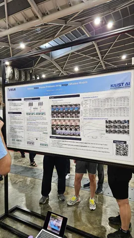
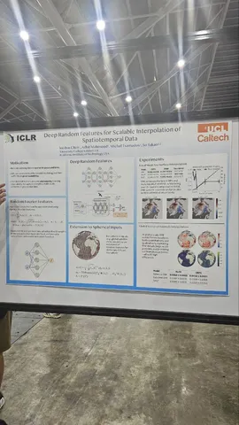
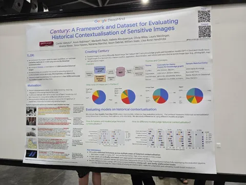
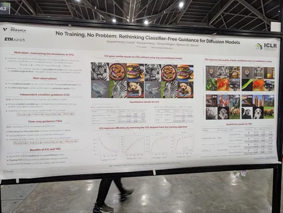
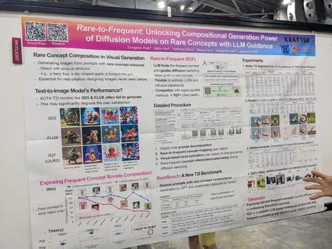
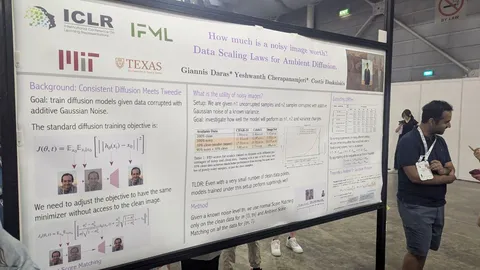
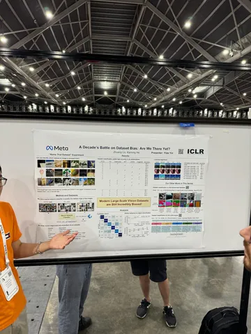
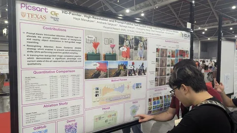

Ещё немного этих мягких французских постеров с ICLR
Наши инженеры и исследователи продолжают делиться своими находками на тему CV — а мы несём их вам, чтобы обеспечить полезным чтением в короткую праздничную неделю.
Solving Video Inverse Problems Using Image Diffusion Models
Авторы предлагают разбить генерацию видео с помощью диффузионных моделей на этапы: сначала покадровая генерация, затем синхронизация кадров по времени. Говорят, что получается быстрее и с хорошим качеством.
Deep Random Features for Scalable Interpolation of Spatiotemporal Data
Работа напоминает NeRF, но для remote sensing данных. Орбитальные спутники не дают плотную картинку по пространству и времени, поэтому авторы предлагают научиться генерации по координатам «пространство-время», которые измерил бы спутник в этот момент.
Century: A Framework and Dataset for Evaluating Ethical Contextualisation of Sensitive Images
Исследователи из DeepMind предлагают новый бенчмарк для оценки понимания моделями разных исторических событий, стратифицированных по типам связанных сущностей (люди, места и прочее) и по типу входных данных.
No Training, No Problem: Rethinking Classifier-Free Guidance for Diffusion Models
Пара годных хаков для улучшения Classifier-Free Guidance (CFG):
- unconditional-эмбеддинги можно заменить на рандомные текстовые токены;
- можно делать negative guidance на рандомные таймстемпы.
Rare-to-Frequent: Unlocking Compositional Generation Power of Diffusion Models on Rare Concepts with LLM Guidance
В этой работе помогают диффузионной модели лучше генерировать редкие концепты. Для этого с помощью LLM находят похожий, но более частый концепт и во время генерации используют информацию от обоих: редкого и частого.
How much is a noisy image worth? Data Scaling Laws for Ambient Diffusion
Авторы переформулируют лосс для зашумлённых изображений в диффузии, чтобы не отбрасывать данные и использовать их для обучения. Сейчас они готовят продолжение работы с разбором гиперпараметров.
A Decade’s Battle on Dataset Bias: Are We There Yet?
Забавный факт: имея классификатор с 7 тысячами параметров, можно с высокой точностью определить, к какому датасету принадлежит фотография. Размер базы — более 3 миллиардов изображений.
HD-Painter: High-Resolution and Prompt-Faithful Text-Guided Image Inpainting with Diffusion Models
Работа от PicsArt с улучшением инпеинтинга. Решают проблему того, что диффузионка сильнее опирается на картинку, чем на промпт. Для этого «перевешивают» аттеншн-мапы в селф-аттеншн по аттеншн-мапам из кросс-аттеншна. Говорят, работает очень робастно.
Работы отобрали и прокомментировали❣ Пётр Вытовтов, Алексей Спасёнов, Сергей Овчаренко, Александр Шишеня, Евгений Ляпустин, Иван Балашов
CV Time
#YaICLR
Наши инженеры и исследователи продолжают делиться своими находками на тему CV — а мы несём их вам, чтобы обеспечить полезным чтением в короткую праздничную неделю.
Solving Video Inverse Problems Using Image Diffusion Models
Авторы предлагают разбить генерацию видео с помощью диффузионных моделей на этапы: сначала покадровая генерация, затем синхронизация кадров по времени. Говорят, что получается быстрее и с хорошим качеством.
Deep Random Features for Scalable Interpolation of Spatiotemporal Data
Работа напоминает NeRF, но для remote sensing данных. Орбитальные спутники не дают плотную картинку по пространству и времени, поэтому авторы предлагают научиться генерации по координатам «пространство-время», которые измерил бы спутник в этот момент.
Century: A Framework and Dataset for Evaluating Ethical Contextualisation of Sensitive Images
Исследователи из DeepMind предлагают новый бенчмарк для оценки понимания моделями разных исторических событий, стратифицированных по типам связанных сущностей (люди, места и прочее) и по типу входных данных.
No Training, No Problem: Rethinking Classifier-Free Guidance for Diffusion Models
Пара годных хаков для улучшения Classifier-Free Guidance (CFG):
- unconditional-эмбеддинги можно заменить на рандомные текстовые токены;
- можно делать negative guidance на рандомные таймстемпы.
Rare-to-Frequent: Unlocking Compositional Generation Power of Diffusion Models on Rare Concepts with LLM Guidance
В этой работе помогают диффузионной модели лучше генерировать редкие концепты. Для этого с помощью LLM находят похожий, но более частый концепт и во время генерации используют информацию от обоих: редкого и частого.
How much is a noisy image worth? Data Scaling Laws for Ambient Diffusion
Авторы переформулируют лосс для зашумлённых изображений в диффузии, чтобы не отбрасывать данные и использовать их для обучения. Сейчас они готовят продолжение работы с разбором гиперпараметров.
A Decade’s Battle on Dataset Bias: Are We There Yet?
Забавный факт: имея классификатор с 7 тысячами параметров, можно с высокой точностью определить, к какому датасету принадлежит фотография. Размер базы — более 3 миллиардов изображений.
HD-Painter: High-Resolution and Prompt-Faithful Text-Guided Image Inpainting with Diffusion Models
Работа от PicsArt с улучшением инпеинтинга. Решают проблему того, что диффузионка сильнее опирается на картинку, чем на промпт. Для этого «перевешивают» аттеншн-мапы в селф-аттеншн по аттеншн-мапам из кросс-аттеншна. Говорят, работает очень робастно.
Работы отобрали и прокомментировали
CV Time
#YaICLR








1 725 просмотров · 16 реакций
Открыть в Telegram · Открыть пост на сайте
{kind=link}